A deployed model can continually learn from the inference compute it already uses.
We present a new inference paradigm called population serving: instead of serving every user the exact same weights, serve a population of \(N\) perturbations of a common model, score each perturbation on the real traffic it receives, and periodically merge the perturbations together to enable learning continually during inference, using only inference compute used to serve the model.
Deployed models interact with millions of users every day, generating vast amounts of data and consuming substantial inference compute. Currently, this experience is used to improve models indirectly, where the deployment data is used in the pre-training and post-training of subsequent generations of models, and training environments are created around situations encountered during use. The experience from deployment is reused, but the computation spent generating it is not. We therefore ask: how can we use the ever-increasing amount of inference compute spent during deployment to improve models?
An obvious solution is to use the current backpropagation-based training stack during deployment. However, this introduces an immediate problem: backpropagation requires storing activations and computing gradients during inference, making inference more expensive. In the compute-bound world we live in right now, with an ever-increasing demand for AI and not enough compute to support it, learning during deployment cannot come at the cost of making inference more expensive. From a practical point of view, this makes one thing clear to us, that models learning during deployment cannot be achieved through gradient-based learning algorithms at the moment.
We therefore turn to gradient-free optimization methods for a solution, and in particular to Evolution Strategies (ES), which has recently been shown to be effective for fine-tuning LLMs (Qiu et al., 2026). ES is attractive because it can learn just from the forward passes a model already performs to answer user requests. This makes learning from deployment compute possible with only a minor modification to how models are served: instead of serving every user the exact same model, we serve a population of perturbations of a common model. This requires a new paradigm for serving models for inference, which we call population serving. Each served perturbation is scored on the traffic it receives and the population is periodically merged to improve models on the fly. Population serving is not a replacement for pre-training or post-training. It is a stage that comes after them, a kind of post-post-training, where population serving keeps improving a model using the compute spent serving it.
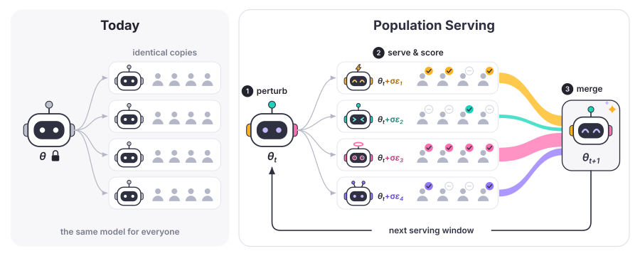
The conditions under which ES has been shown to work are not what actually happens during deployment. Traditionally, every perturbation in ES is evaluated on the same data, decoded greedily, and scored by a perfect verifier. None of these conditions will hold true during deployment, where each perturbation sees its own stream of requests, decodes with sampling, and is scored by rewards that can be wrong. The primary question we aim to answer in this blog is therefore—can ES still learn effectively under the conditions encountered during deployment?
And to our surprise, we find that it does!
Our main findings are as follows:
- Population serving enables parametric learning during inference. Under deployment conditions, serving populations of a common model followed by periodic merging can enable learning in single-turn, multi-turn agentic, and massively multi-task problem settings. Notably, this shows that ES can learn with a group size of 1, something group-based RL methods like GRPO cannot do.
- ES learns with imperfect verification. Even with large amounts of reward verdicts flipped at random, the model keeps most of the gain it makes with a perfect judge. More interestingly, fixing verifier errors midway during inference can recover most of the incurred loss in performance.
- Forgetting can be contained. General-benchmark scores drop in almost every run, by up to 29 points, but anchored weight decay (Schweighofer et al., 2026) removes most of the loss at no cost to learning.
1Population Serving: Turning Inference into a Training Environment
Today, every user who sends a query to a deployed model is served the exact same set of weights. A model answers a billion questions in a day and is, at the end of that day, precisely the model it was at the start. Nothing it saw, nothing it got right, nothing it got wrong, leaves any trace on its parameters. We propose to change this with a single modification to how models are served through population serving, as shown in Figure 1. It goes as follows:
- 1Serve a population of perturbations. Instead of serving each user the exact same model, we serve different perturbations of a common source model. Each perturbation is the source model with a small amount of Gaussian noise added to its weights.
- 2Score them on real traffic. Every perturbation accumulates rewards on the queries it encounters, and these rewards are aggregated into a single fitness score for that perturbation.
- 3Merge, and serve again. Periodically, the perturbations are combined into a new source model through a reward-weighted update (defined below). The new model is evaluated for reliability and safety, and a fresh population is drawn from it and served.
The fundamental idea behind population serving is grounded in why zeroth-order gradient methods work in the first place. In zeroth-order learning, each perturbation casts a vote in the direction towards which a deployed model should move to optimize a reward function (Salimans et al., 2017). The merge step is a simple linear combination of perturbative noise, weighted by the z-scored rewards for each perturbation as shown below:
Here \(\theta_t\) is the current source model, \(\epsilon_{t,i} \sim \mathcal{N}(0, I)\) is the noise that defined the \(i\)-th served perturbation (\(\theta_{t,i} = \theta_t + \sigma\epsilon_{t,i}\)), \(Z_{t,i}\) is that perturbation's reward z-scored across the population of \(N\), and \(\alpha\) is the effective learning rate.
If a learning recipe as simple as above can improve models reliably, we believe it would be a complete waste to not do population serving.
In the coming sections, we show that models can be improved through ES under the population serving paradigm without perfect verifiers and with minimal forgetting.
2Learning Under Deployment Conditions: Heterogeneous Data and Sampled Decoding
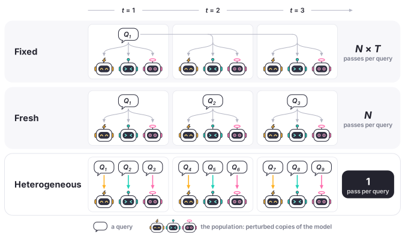
Learning under real deployment settings means a model experiences a very different data stream compared to what ES is usually used for. This difference is clearly described in Figure 2 through three data conditions: fixed, fresh, and heterogeneous. In the fixed condition, the exact same data stream is shared across all perturbations and iterations, as in the experiments of Qiu et al. (2026) and their subsequent follow-ups. In the fresh condition, all perturbations encounter the same stream of data within an iteration, but these requests do not appear again in subsequent iterations. Either of the above data conditions during inference requires that every single user query needs to go through all the perturbations served during inference, repeated several times in the case of the fixed regime, making them highly impractical. Therefore, to incorporate learning during deployment, each user query must only go through one inference process, which we call the heterogeneous data stream condition, where no user requests are ever repeated, either across perturbations or across iterations.
Additionally, responses during ES based fine-tuning are usually decoded greedily, which is also not something that happens during inference. But why should we care about such technicalities?
Heterogeneous data streams that will be encountered during inference, along with sampling-based decoding, add data and sampling luck terms to the ES update due to the chance associated with getting an easy or difficult stream of queries for one perturbation, as well as the variance associated with solving them correctly for one perturbation due to sampling while not for others. The update equation under this condition is shown below:
A detailed derivation and explanation of each of the terms in the above equation can be found in the appendix. This raises a direct empirical question—can ES still learn effectively under heterogeneous data streams?
Datasets: To avoid confounding the effect of heterogeneous data streams with evaluator errors, we first focus on verifiable settings with perfect evaluators, leaving the effects of imperfect evaluation to the next section. Studying heterogeneous data streams requires a large number of distinct samples, since no sample can be shared across perturbations or repeated across iterations. We therefore use synthetic datasets, allowing us to scale to millions of data samples without introducing evaluator errors. We use two tasks: Countdown, where the model generates a solution in a single response (Qiu et al., 2026), and Agentic Sudoku (Zheng et al., 2026), where the model interacts with an environment over multiple turns to solve a puzzle. These tasks allow us to study whether ES can learn under heterogeneous data streams in both single-response generation and multi-turn agentic settings.
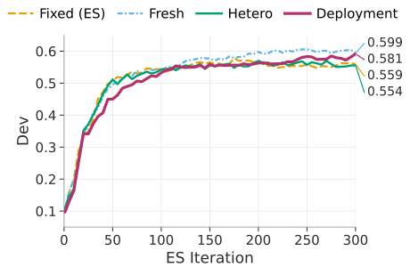
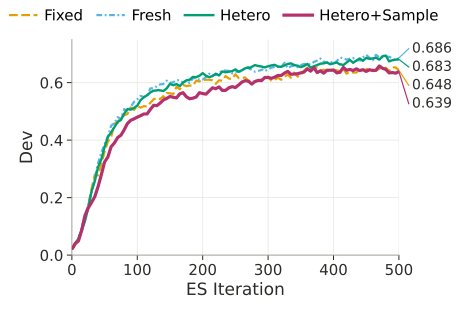
Results. We follow the experimental setup of Qiu et al. (2026), where every update creates 30 perturbations of the weights, and each perturbation is scored on 200 problems. The only thing we change is the source of data streams as described previously. The results can be seen in Figure 3. We see that every model learns in every setting, including the heterogeneous data streams setting with sampling based decoding. For Countdown, under deployment settings (heterogeneous data streams with sampling), Llama-3.1 climbs from 0.10 to 0.58 on 2,000 held-out problems it never trains on. Giving each perturbation its own data barely hurts, although this changes from model to model (appendix). Therefore, sampling and data luck does cost a little performance, but not enough to prevent learning. It is also the same story with multi-turn agentic Sudoku tasks as shown in Figure 3b.
2.1Massive Multi-Task Learning with 78 Tasks at Once
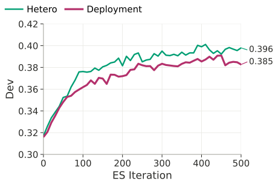
Countdown and Sudoku are clean, verifiable and synthetic tasks. However, real traffic is messier. A deployed model fields requests about everything at once, and different requests call for different ways of judging an answer. So we push ES into a massively multitask setting built from BIG-Bench (Srivastava et al., 2022): a single model trained on 78 tasks simultaneously, spanning ten categories, from logic puzzles, arithmetic and code generation to multilingual question answering and social reasoning. The training pool holds 396,338 examples, and the tasks are far from uniform: the smallest has 205 training examples and the largest 43,735. They are scored in different ways too: 70 tasks by exact match, where an answer is simply right or wrong, and 8 open-ended generation tasks by chrF, which gives partial credit for how closely the output matches the reference. We keep the objective deliberately simple, a perturbation's reward is just the sum of its scores over its 200 examples, with no per-task weighting, so each task counts in proportion to how often it shows up. We specifically focus on the two heterogeneous data streams for this experiment.
The results can be seen in Figure 4. We find that ES learns in this massive and messy multi-task setting with non-uniform task distributions evaluated with widely different metrics. The task category-wise numbers for BIG-Bench can be found in the appendix.
Unlike GRPO, ES learns with a group size of 1.
In deployment, every query gets exactly one answer. Even if we allow gradient-based learning during deployment, GRPO still cannot learn during deployment without parallel rollouts of the same prompt. Our results in this section are striking because they show that ES learns even with a group size of 1, despite the added data luck and sampling luck terms in every update.
3Learning With Imperfect Verifiers
We expect that learning during inference from deployment traffic means learning from rewards that come from reward models, LLM judges, unit tests or user feedback, and each of them can be wrong in different ways. This raises the question of how well ES learns with noisy evaluators. We also expect judge errors to eventually get spotted, through audits or user complaints, and then patched, which makes us ask whether the lost performance is recovered once a verifier error is spotted and fixed. Answering both questions is important to assess the practicality of learning during inference. We simulate a few possible judge errors using the Countdown dataset with Qwen2.5-7B-Instruct under the heterogeneous data stream.
Modeling judge errors. A Countdown answer earns one of three rewards: 0 if it cannot be read, 0.1 if it is well formatted but wrong, and 1.1 if it is correct (Qiu et al., 2026). We model three ways a judge can fail. First, we have a random-error judge that gets each verdict wrong with probability \(p\), replacing the true reward with one of the other two at random. Second, a reward-biased judge is a stingy reward model which always returns a 0 reward regardless of the answer with probability \(p\). Third, an input-biased judge, that has a blind spot on every problem whose target lies between 60 and 80, about a fifth of all problems, it consistently swaps the rewards of right and wrong answers. These three errors span the basic ways any label or reward can be corrupted—completely at random, in a direction that depends on the true reward, or an error tied to the data sample.
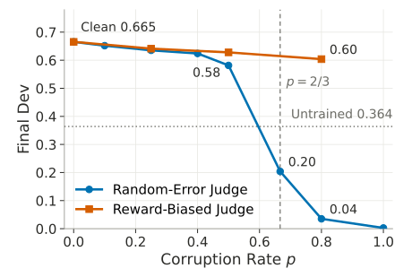
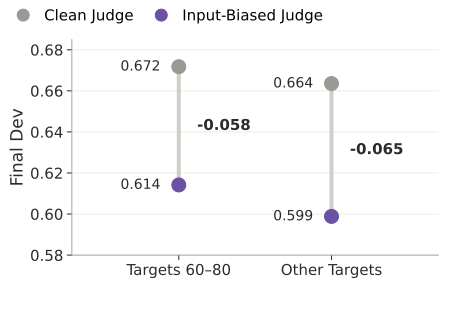
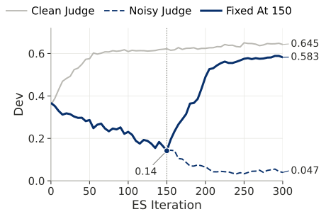
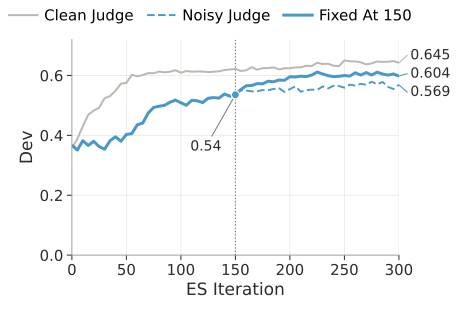
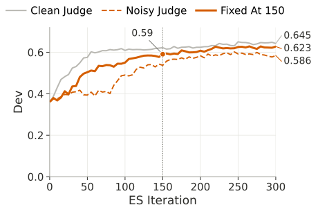
ES learns from noisy rewards, as long as there is a learning signal. Figure 5(a) presents the final scores after training Qwen2.5-7B-Instruct on Countdown with respective judge errors for 500 iterations. We see that ES tolerates a surprising amount of judge error (learning curves for every judge are shown in Figure 11 in appendix). With half of all verdicts wrong (p = 0.5) for the random-error judge (note that completely random signals happen at p = 2/3 for this setting), the model still climbs from 0.36 to 0.58, keeping 72% of the gain it makes with a perfect judge (0.665). The performance for the untrained model is shown by a dotted horizontal line. The reward-biased judge is even easier to live with: zeroing 80% of all rewards still leaves 80% of the gain (0.60).
Fixing the judge recovers most of the loss. In practice, we expect the judge errors to eventually get spotted and then patched. An important question for continually learning systems is if the loss of performance is recoverable once the judge errors are spotted. To find out, we train with a noisy judge for 150 iterations and then switch to the clean one, with no rollback to an earlier checkpoint (Figure 6). The hardest case is the 80% random-error judge, which prefers wrong answers and has dragged the model from 0.36 down to 0.14 by the time it is fixed. Over the next 150 iterations the model climbs back to 0.58, close to the 0.65 of a run that had a clean judge all along, while a run that keeps the faulty judge ends at 0.05. The milder judges recover too, ending at 0.60 (50% random errors) and 0.62 (80% zeroed rewards), within about 0.04 and 0.02 of the clean run. This shows that ES does not need a perfect verifier, only one that leans the right way on average, and most of the harm from a bad verifier is undone once it is fixed.
4Forgetting and How to Prevent It
Forgetting has been a longstanding question in continual learning literature. Learning from live traffic only helps if the model does not lose what it already knew along the way. To check, we run every trained model through a fixed battery of general benchmarks: GSM8K for math word problems, MMLU for broad knowledge (a 2,000-question subset) and IFEval for instruction following. We then compare the scores against the model we started from.
Forgetting is real. Figure 7 shows the forgetting numbers for all model-task pairs presented in this work, where out of the 27 benchmark scores, we see forgetting in 26 pairs. OLMo-2 and Qwen2.5-7B lose at most 4 points, Llama-3.1 and Gemma-3 lose up to 10 points on Countdown. Qwen3.5-4B, after 500 iterations of Sudoku, loses 19 points on GSM8K and 29 on IFEval. This phenomenon has also been observed in prior work (Abdi et al., 2026).
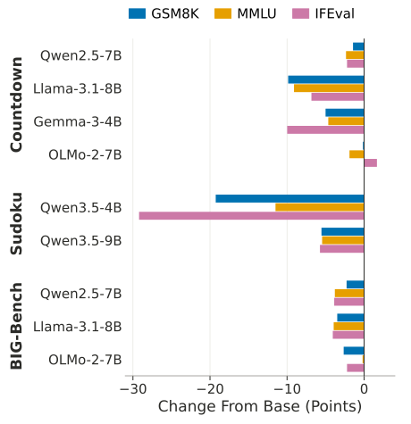
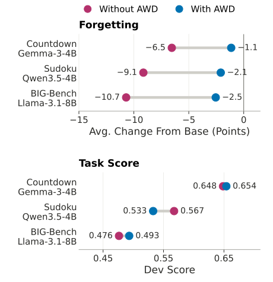
Anchored weight decay to the rescue. We use anchored weight decay (AWD) (Schweighofer et al., 2026) to mitigate forgetting during learning with ES. AWD keeps a copy of the starting weights and, after every ES update, pulls the current weights 0.5% of the way back toward them. The update itself is unchanged, and AWD needs no extra rollouts, data or reward calls. We test it on one model per task: Gemma-3-4B on Countdown, Qwen3.5-4B on Sudoku and Llama-3.1-8B on BIG-Bench. Each pair trains for 300 iterations on the same hardware, once with AWD and once without. We see that AWD removes most of the forgetting, as shown in Figure 7b (and Figure 12 in appendix). After 300 iterations, the average loss across the three benchmarks shrinks from 6.5 to 1.1 points on Countdown, from 9.1 to 2.1 on Sudoku and from 10.7 to 2.5 on BIG-Bench, and no single benchmark ends more than 3.5 points below the base model. This does not come at the cost of learning, as shown in Figure 7b for every task. The dev score is unchanged on Countdown (0.648 without AWD, 0.654 with it) and slightly lower on Sudoku (0.567 without AWD, 0.533 with it), and neither difference is statistically significant at iteration 300. On BIG-Bench, AWD is actually better: on the trained tasks (0.476 without AWD, 0.493 with it) and on 70 tasks the model never trains on (0.651 without AWD, 0.689 with it, at iteration 300). Therefore, we see that AWD mitigates forgetting to a large extent.
5Conclusion
We show that continually learning just from inference compute is a possibility even today, and this learning can happen for free if we are able to modify our inference process only slightly: instead of serving the exact same model weights to all users, we serve a population of perturbations of a common model that eventually get merged using zeroth-order gradient methods. We call this paradigm population serving. When enabled, population serving will allow us to make use of the increasing amount of inference compute available in the world to improve our existing models. Moreover, this improvement happens in the real world, which is the ultimate environment in which a model can be trained. This way, every inference query also directly participates in improving the current version of the model. All this can happen without making inference more expensive, only if we are willing to serve a population of models instead of the exact same copy.
6Limitations, Challenges and Future Work
This blog presents a first proof-of-concept study for the paradigm of population serving, where we enable gradient-free learning during inference by serving perturbations of the same base model. However, a lot more needs to be done. Below, we list down some limitations of our work that may serve as inspiration for future work in this domain.
- Population quality and behavior: Serving perturbations of the same model needs guarantees on these populations being similar in capability to a single post-trained model. Our early results show this to be true. Watch out for future work on this.
- Learning under real use: While we try to tackle this problem with large synthetic and multi-task datasets, the population serving setting needs to be evaluated in real user queries with reward heuristics.
- Modeling judge errors: Learning during inference would require learning from different reward heuristics, each of which would be fallible in their own unique ways. Future work should explore errors with reward-heuristics with focus on stabilizing learning during inference.
- Maintaining safety and alignment: Continually learning models pose new kinds of safety and alignment challenges. Immediate directions include adding safety classifiers as part of the fitness score assignment for each perturbation as well as internal auditing of merged models before re-serving after every learning iteration.
- Infrastructure challenges: Serving perturbations of the same model may add additional infrastructure challenges which need to be solved, including challenges around quantized serving, prefix caching and effective routing and reward attribution.
Citation
Please cite this post as:
Akshat Gupta, Marquita Ellis, Gopala Anumanchipalli and Leshem Choshen. “Learning Continually from Inference Compute.” 2026. https://akshat57.github.io/blog/population-serving/
@misc{gupta2026population,
title = {Learning Continually from Inference Compute},
author = {Gupta, Akshat and Ellis, Marquita and
Anumanchipalli, Gopala and Choshen, Leshem},
year = {2026},
howpublished = {\url{https://akshat57.github.io/blog/population-serving/}},
note = {Blog post}
}References
- Immanuel Abdi, Akshat Gupta, Micah Mok, Alex Lu, Nicholas Lee, and Gopala Anumanchipalli. Evolutionary Strategies at Scale lead to Catastrophic Forgetting. Proceedings of the 64th Annual Meeting of the Association for Computational Linguistics (Volume 2: Short Papers), pages 194–204, San Diego, California, United States. Association for Computational Linguistics, 2026. doi.org/10.18653/v1/2026.acl-short.18
- Xin Qiu, Yulu Gan, Conor F. Hayes, Qiyao Liang, Yinggan Xu, Roberto Dailey, Elliot Meyerson, Babak Hodjat, and Risto Miikkulainen. Evolution Strategies at Scale: LLM Fine-Tuning Beyond Reinforcement Learning. Proceedings of the 43rd International Conference on Machine Learning, 2026. arXiv:2509.24372. arxiv.org/abs/2509.24372
- Tim Salimans, Jonathan Ho, Xi Chen, Szymon Sidor, and Ilya Sutskever. Evolution Strategies as a Scalable Alternative to Reinforcement Learning. 2017. arXiv:1703.03864. arxiv.org/abs/1703.03864
- Kajetan Schweighofer, Conor F. Hayes, Roberto Dailey, Risto Miikkulainen, and Xin Qiu. Overcoming Forgetting in LLM Fine-Tuning with Evolution Strategies. arXiv preprint arXiv:2605.30148, 2026. arxiv.org/abs/2605.30148
- Aarohi Srivastava, Abhinav Rastogi, Abhishek Rao, Abu Awal Md Shoeb, Abubakar Abid, Adam Fisch, Adam R. Brown, Adam Santoro, Aditya Gupta, Adrià Garriga-Alonso, and others. Beyond the imitation game: Quantifying and extrapolating the capabilities of language models. arXiv preprint arXiv:2206.04615, 2022. arxiv.org/abs/2206.04615
- Zhi Zheng, Rongsheng Chen, Yunpeng Ba, Zhenkun Wang, Yee Whye Teh, and Wee Sun Lee. Agentic ESOpt: Fine-Tuning Long-Horizon LLM Agents with Minimal GPU Requirements. arXiv preprint arXiv:2608.17310, 2026. arxiv.org/abs/2608.17310
ADetailed Derivation of ES under Data Streams
In this appendix, we provide the full first-order derivations for the fixed, fresh, and heterogeneous data regimes introduced in the main text. Throughout, perturbations are sampled independently as \(\epsilon_{t,i}\sim\mathcal{N}(0,I)\) and resampled at every iteration. We retain terms up to first order in the perturbation scale \(\sigma\), writing higher-order terms as \(\mathcal{O}(\sigma^2)\).
A.1Fixed-Data Regime
In the fixed-data regime, every perturbation is evaluated on the same batch \(B\) at every iteration. Under greedy decoding, the reward of perturbation \(i\) at iteration \(t\) is
Taking a first-order Taylor expansion around \(\theta_t\),
Averaging over the population gives
where
Subtracting the population mean therefore gives
Substituting this into the ES update gives
The sum can be rewritten as
because \(\sum_i(\epsilon_{t,i}-\bar\epsilon_t)=0\). Defining the empirical perturbation covariance
the one-step update becomes
For i.i.d. isotropic Gaussian perturbations,
and \(\Sigma_{\epsilon,t}\rightarrow I\) as the population size grows. For finite \(N\), however, the empirical covariance differs from the identity; in particular, when \(N\ll d\), it has rank at most \(N-1\). Thus, even in the fixed-data regime, an individual ES update is a finite-population estimate of the gradient direction.
Reward normalization also determines the magnitude of the update. Under the same first-order approximation,
Consequently,
As \(N\rightarrow\infty\) and \(\Sigma_{\epsilon,t}\rightarrow I\),
Thus, under the first-order approximation, z-score-normalized fixed-data ES approaches normalized gradient ascent as the population grows.
Across \(T\) iterations, the cumulative parameter change is
Although the same batch \(B\) is reused at every iteration, the gradient cannot be taken outside the summation because it is evaluated at the evolving parameters \(\theta_t\).
A.2Fresh-Data Regime
In the fresh-data regime, all perturbations share the same batch within an iteration, but a new batch is used at every iteration:
For greedy decoding, perturbation \(i\) receives reward
Because the same \(B_t\) is shared by all perturbations within iteration \(t\), the population mean has exactly the same structure as in the fixed regime,
so that
The one-step update is therefore
Thus, the fixed and fresh regimes are identical in form within a single iteration. The distinction appears across iterations: fixed-data ES repeatedly optimizes the same empirical reward function \(f_B\), whereas fresh-data ES follows the gradients of newly sampled batches.
Summing over \(T\) iterations,
If \(B_t\) is independently sampled from a deployment distribution \(\mathcal{D}\), define
Under the usual regularity conditions,
Fresh-data ES is therefore analogous to minibatch stochastic gradient ascent: each iteration uses a fresh stochastic estimate of the population reward gradient, but the direction is estimated through ES perturbations rather than backpropagation and is additionally affected by reward normalization.
This distinction makes the fresh regime a useful control. Moving from fixed to fresh removes data reuse across iterations while preserving shared evaluation within each population. Moving from fresh to heterogeneous evaluation additionally removes shared data across perturbations.
If stochastic rather than greedy decoding is used in the fresh regime, sampling variation introduces an additional sampling-noise term, but there is still no data-luck term within an iteration because all perturbations share the same batch.
A.3Heterogeneous-Data Regime
In the heterogeneous regime, each perturbation receives its own batch \(B_{t,i}\). We additionally allow stochastic decoding. Let \(f_{B_{t,i}}(\theta)\) denote the expected reward on batch \(B_{t,i}\), and let \(\eta_{t,i}\) denote the deviation of the realized reward from this expectation due to stochastic generation. By construction,
Setting \(\eta_{t,i}=0\) recovers the heterogeneous-data regime with greedy decoding.
The realized reward is
A first-order Taylor expansion gives
The population mean is
where
Unlike in the fixed and fresh regimes, neither the unperturbed reward nor its gradient is shared across the entire population. Subtracting the population mean gives
We define
as the data luck of perturbation \(i\). It captures whether that perturbation happens to receive a batch on which the current unperturbed model performs better or worse than on the batches received by the rest of the population.
Similarly,
is its sampling luck, capturing whether stochastic generation happens to produce a more or less favorable realized reward than the population average.
Both quantities are centered:
This centering explains why the corresponding update depends on perturbation directions relative to the population mean. More generally, for any centered scalar weights \(w_{t,i}\) satisfying \(\sum_i w_{t,i}=0\),
Thus, ES associates relative reward advantages with relative perturbation directions.
We next separate the perturbation-dependent reward term into an average-gradient signal and a residual. Define
Each batch-specific gradient can then be decomposed as
Using this decomposition, the gradient-dependent portion of the ES update becomes
We denote the second term by
This residual captures the finite-population effect of the fact that heterogeneous batches can have different local reward gradients.
Combining the terms gives the one-step heterogeneous update,
The first term is the useful average-gradient signal. The second captures accidental correlations between data or sampling luck and the perturbation directions sampled in a finite population. The final term captures variation in the local gradients of the heterogeneous batches.
Under independent assignment of batches to perturbations, the numerator of the data-luck term has zero expectation over the sampled perturbations. Because \(\eta_{t,i}\) is defined as a conditionally mean-zero sampling deviation, the numerator of the sampling-luck term is likewise zero in expectation. Conditional on the batches, the numerator of the residual in Eq. 38 also has zero expectation over i.i.d. isotropic perturbations, since the batch-gradient deviations sum to zero.
These observations explain why heterogeneous evaluation need not introduce a systematic parameter-space direction: the additional terms arise from finite-population correlations between reward variation and random perturbation directions. However, Eq. 39 uses z-score-normalized rewards, and \(s_t\) is itself a random quantity computed from the same rewards. The zero-mean statements above therefore apply directly to the corresponding unnormalized numerators; exact unbiasedness of the fully normalized estimator does not follow without additional assumptions. When \(s_t\) is treated as a common scalar or concentrates around its population value, the same directional interpretation applies.
Heterogeneity can also affect the update through the reward normalization itself. Define
From Eq. 30,
and hence
Thus, data and sampling variation can affect heterogeneous ES in two ways. First, they can create accidental finite-population directions through Eq. 39. Second, they contribute directly to the reward variation used for normalization. When these nuisance components are approximately uncorrelated with the useful perturbation-dependent signal, they increase the reward variance and therefore dilute the relative contribution of the gradient signal after normalization.
Finally, summing the one-step update over \(T\) iterations gives
The perturbations are independently resampled at each iteration. Consequently, even if a particular serving arm were systematically assigned easier or harder data, that arm would generally correspond to a different parameter-space direction at the next iteration. Persistent arm-level reward differences therefore do not by themselves imply a persistent directional bias; such a bias requires reward variation to become systematically correlated with perturbation direction.
The cumulative expressions make the distinction between the three regimes explicit. Fixed-data ES repeatedly follows the reward gradient of the same empirical batch; fresh-data ES follows a sequence of shared minibatch gradients; and heterogeneous-data ES retains an average-gradient signal while introducing additional finite-population variation from differences in the data and sampled generations encountered by individual perturbations. The experiments in the main text test whether this remaining signal is sufficiently strong for learning under the relatively small populations used in practice.
BAdditional Results
B.1All Models under the Four Data Regimes
Figures 8 and 9 show the learning curves for every model we trained on Countdown and Agentic Sudoku under all four data regimes; the main text shows one model per task. Giving each perturbation its own data (Hetero) costs little relative to the shared-data regimes for every model, and on OLMo-2 it is the best of the four. Sampled decoding (Hetero+Sample) costs most on OLMo-2 on Countdown and about five points on both Sudoku models.
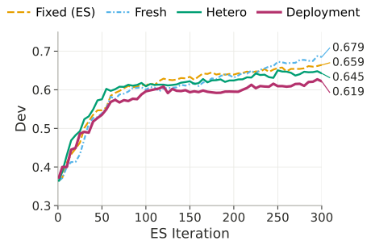
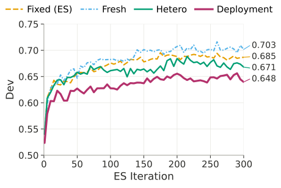
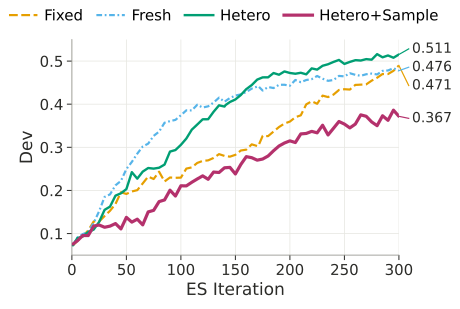
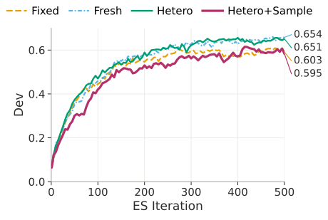
B.2BIG-Bench: All Models and Per-Category Gains
Figure 10 shows the BIG-Bench learning curves for all three models under the two deployment-like regimes, and Table 1 breaks the Hetero+Sample gains down by task category. The gains are broad rather than concentrated: every category improves for Llama-3.1 and Qwen2.5, and nine of ten for OLMo-2.
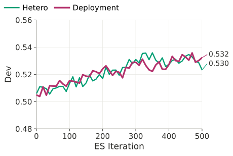
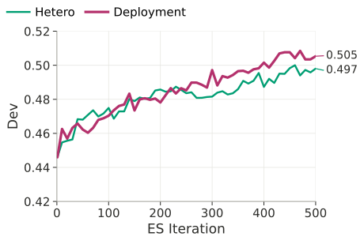
| Category | Tasks | Qwen2.5-7B | Llama-3.1-8B | OLMo-2-7B |
|---|---|---|---|---|
| Logic | 18 | +0.9 | +3.8 | +5.3 |
| Social | 11 | +1.4 | +2.1 | +5.6 |
| Multilingual | 11 | +0.6 | +5.5 | +1.0 |
| Linguistics | 9 | +5.5 | +9.6 | +7.9 |
| Math | 8 | +7.0 | +6.1 | +5.1 |
| Commonsense | 6 | +2.7 | +5.5 | +10.0 |
| Code | 6 | +2.1 | +11.9 | +4.9 |
| Factual | 4 | +5.4 | +5.0 | +25.6 |
| Other | 3 | +4.4 | +4.5 | +20.1 |
| Reading | 2 | +0.5 | +18.6 | −1.4 |
| All | 78 | +2.7 | +5.9 | +6.9 |
| Start → end | 0.505 → 0.532 | 0.446 → 0.505 | 0.316 → 0.385 |
B.3Learning Curves for Every Judge
Figure 11 shows the full learning curves behind the final scores reported in the main text for the random-error, reward-biased, and input-biased judges.
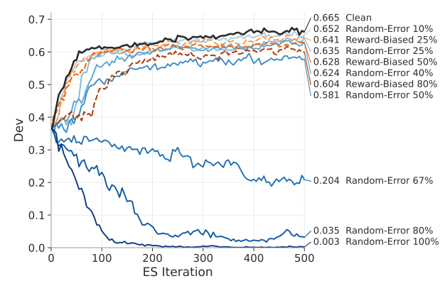
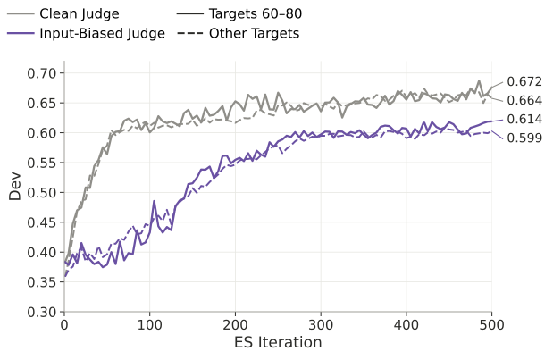
B.4Anchored Weight Decay: Full Curves
Figure 12 shows, for each of the three model–task pairs, the dev score, the average change from the base model on the general benchmarks, and the weight drift, with and without AWD.
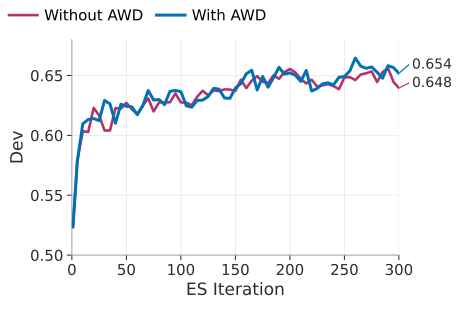
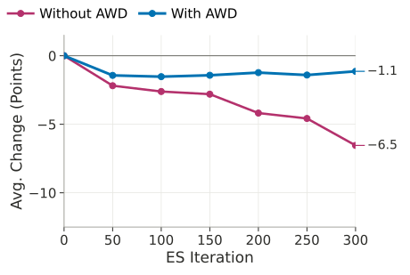
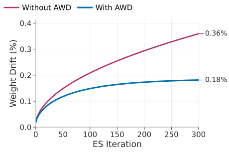
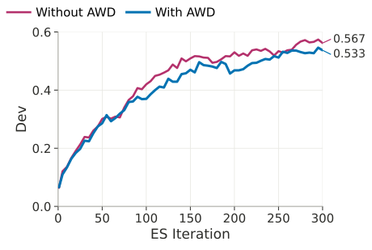
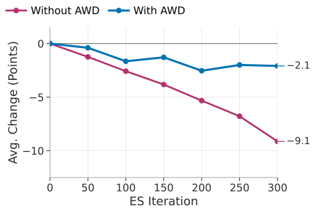
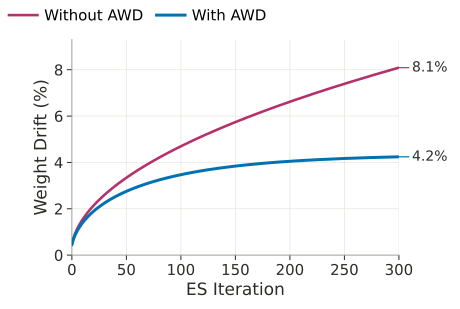
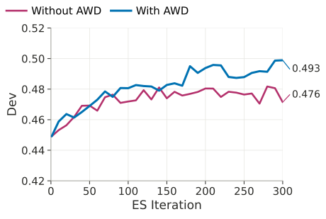
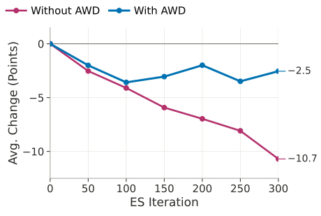
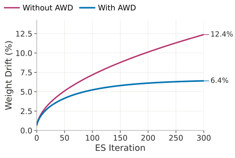